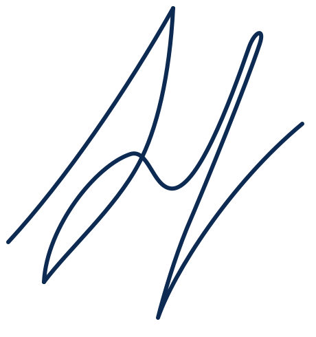

Печатная книга
50 ₪ + почтовые расходы
Мягкая обложка, 360 страниц. Отправляем почтой. Оплата через Bit или банковским переводом, детали в WhatsApp.

Юрий Моор-Мурадов
Живой иврит, объяснённый по-русски и с юмором. Восемь книг с ответами.

Наведите на книгу, чтобы узнать большеЛистайте полку и нажмите на корешок, чтобы открыть книгу

Юрий Моор-Мурадов
Писатель, драматург и журналист, переводчик с иврита. Автор любимой читателями серии «Занимательный иврит», книг об Израиле и детективов. Много лет работал в израильской прессе и на радио, живёт между двумя языками и рассказывает о них с теплом, иронией и глубоким знанием предмета.
Решил, что через пять лет начну писать на иврите, и «потерпел фиаско, как и СССР со своими пятилетками».
Детективы
«Прежде всего, успокойтесь и садитесь вот сюда», произнёс он на иврите с заметным русским акцентом.
«Дебют частного детектива»
Три сборника детективных повестей и сборник рассказов. Израильские улицы, загадка в каждой истории, лёгкий язык и неожиданный финал. А для тех, кто читает на иврите, первая книга автора на иврите.
Все детективыНа прошлой неделе ваша «Прогулка» в газете «Новости недели» была настолько увлекательной, что я просто не могла оторваться. Полезно, интересно, забавно. Если можно, и дальше так же!
В минувший четверг я имел честь и удовольствие побывать на проведённой Вами в Ашдоде беседе об иврите и приобрести обе Ваши книги. Первую я уже прочёл и планирую ещё несколько раз повторить это удовольствие.
Я верный поклонник вашей рубрики «Прогулки с ивритом».
Позвольте выразить Вам своё восхищение.
50 ₪ + почтовые расходы
Мягкая обложка, 360 страниц. Отправляем почтой. Оплата через Bit или банковским переводом, детали в WhatsApp.
40 ₪
Цифровая копия приходит на ваш e-mail после оплаты. Читайте с телефона, планшета или компьютера.